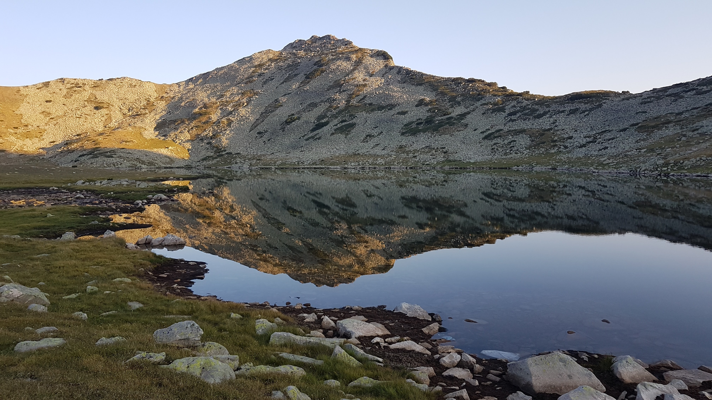

Тевно езеро е едно от най-красивите високопланински езера и се намира в самото сърце на алпийската част на Пирин. Може би защото е сравнително трудно достъпно, то крие в себе си особен чар и обаяние. Обикалям в тази планина вече трета година и едва сега се почувствах готов да посетя това уникално местенце.
Както винаги, всичко подобно изисква определена подготовка. При мен тя бе предимно физическа, защото след случилото се при посещението ми до Синаница, си дадох ясна сметка, че така просто не може. В продължение на месец активно спортувах почти ежедневно колоездене и ходене пеша с километри по гребната база в Пловдив и това ми помогна изключително много не само за да сваля близо 7 килограма, но и да вляза в нужната кондиция.
Вечерта преди отпътуването бях на съвсем друга вълна, прибрах се късно, едвам успях да си купя необходимата храна за следващите два дни и в общи линии стягах раницата в малките часове на нощта. Време за сън почти не остана и още преди да се развидели бях поел в добре познатата посока. Утрото посрещнах на Юндола, като съвсем ефирна мъгла се стелеше над поляните.
Никой не е толкова мъдър, че да няма какво да научи от природата.